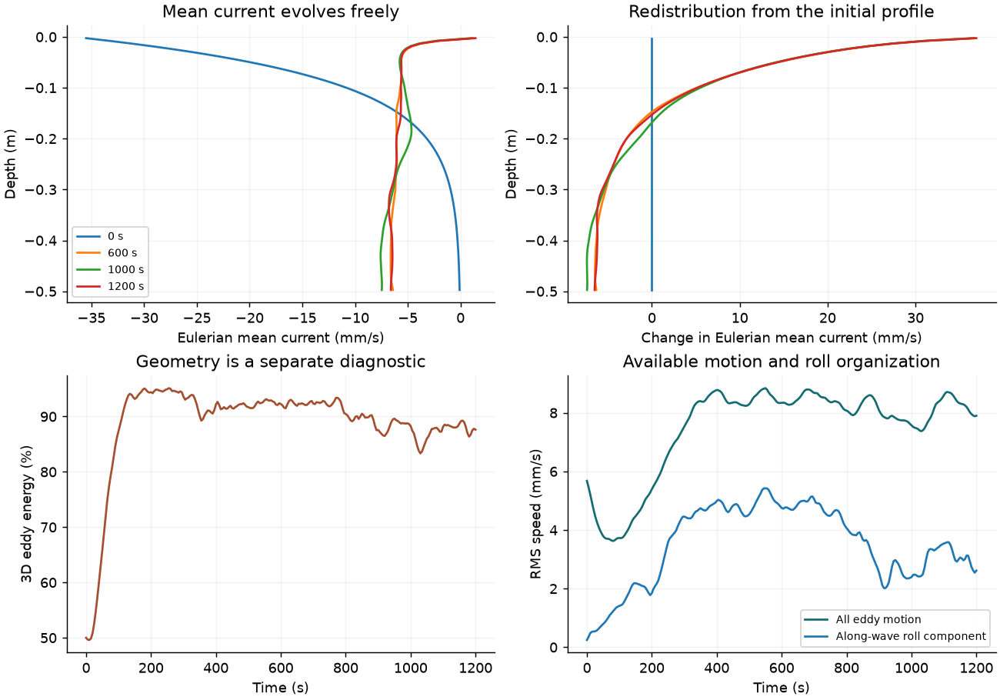
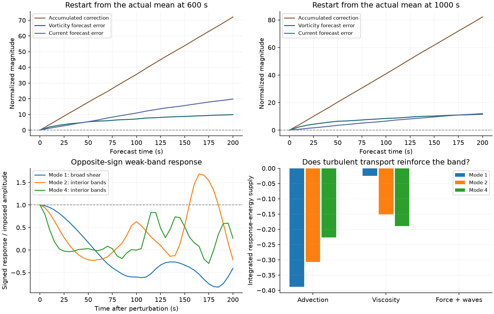

Verified simulation bundle
wind-u004-a100-s1
Water-side friction velocity 4 mm/s; surface Stokes drift 36.6 mm/s; α = 1; seed 1; grid 128 × 64 × 96.
All numeric results · Closure histories · Band-response histories and mode mixing · Mean profiles and momentum fluxes · Vertical current modes

Does the mean profile contain persistent interior extrema?
| Type | Depth (m) | Half-prominence width (m) | Presence in final 200 s | At least 80%? |
|---|---|---|---|---|
| maximum | -0.456 | 0.0484 | 59% | no |
| maximum | -0.128 | 0.0889 | 61% | no |
| minimum | -0.388 | 0.0753 | 44% | no |
| minimum | -0.0495 | 0.0468 | 83% | yes |
The prominence floor is 1% of the initial base eddy speed. Extrema are matched within half their width or two cells, whichever is larger. These describe the profile; they do not independently identify a beta-driven jet. Full-cadence data determine the metrics; public profiles and vertical-mode histories are sampled every 40 s.
Does the reduced mean equation predict the next 200 seconds?
| Window | Depth region | εC | Vorticity error | Current error | Assessment |
|---|---|---|---|---|---|
| 600–800 s | full | 63.5 | 6.17 | 16.6 | INCONCLUSIVE |
| 600–800 s | interior | 50.4 | 6.19 | 13.9 | INCONCLUSIVE |
| 600–800 s | active_interior | 72.1 | 9.86 | 19.8 | INCONCLUSIVE |
| 1000–1200 s | full | 66.9 | 6.93 | 10.9 | INCONCLUSIVE |
| 1000–1200 s | interior | 52.7 | 6.81 | 9.17 | INCONCLUSIVE |
| 1000–1200 s | active_interior | 82.2 | 11.5 | 12 | INCONCLUSIVE |
Both interior regions must pass. εC ≤ 0.1 is the predeclared small-correction criterion; both maximum forecast errors must also be ≤ 0.1. Quiet windows and correction values outside the assumed regime are inconclusive. An apparent failure requires matching spatial and timestep verification.

Does turbulent transport reinforce a weak band?
| Mode | Wavelength | Final gain | Eddy reinforcement | Assessment |
|---|---|---|---|---|
| 1 | 1 m | 0.405 | no | NO POSITIVE RESPONSE DEMONSTRATED |
| 2 | 0.5 m | 0.213 | no | NO POSITIVE RESPONSE DEMONSTRATED |
| 4 | 0.25 m | 0.265 | no | NO POSITIVE RESPONSE DEMONSTRATED |
A positive candidate has gain ≥ 1.2, positive integrated advective reinforcement, and a closed response budget. Supporting a positive response also requires amplitude, independent-seed, spatial and timestep checks. Mode 1 is a broad monotonic shear perturbation; its growth alone is not jet formation. Modes 2 and 4 contain interior bands. This is a finite-time response, not a proven unstable eigenmode; absence of growth does not rule out finite-amplitude jets.